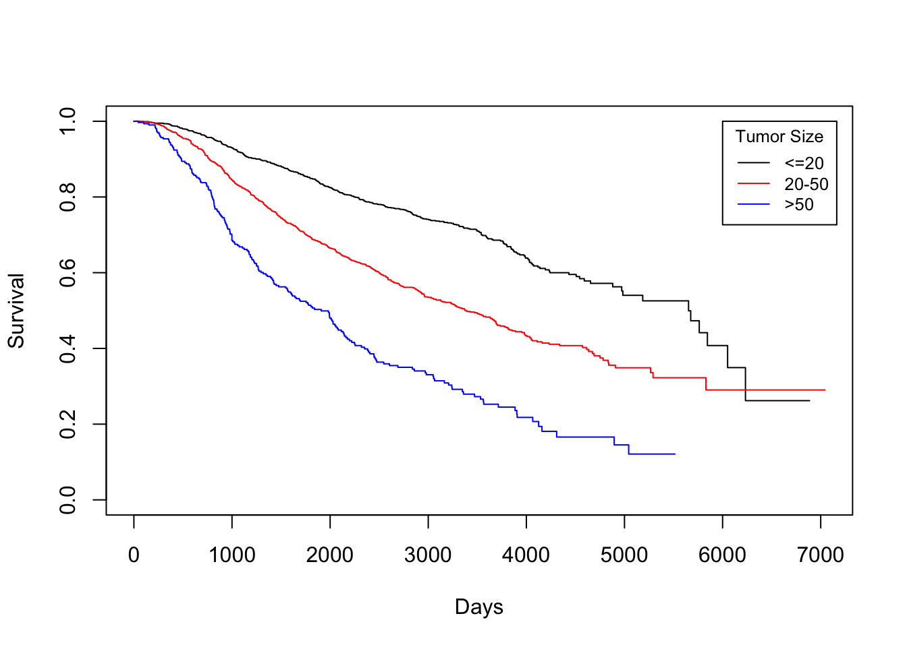
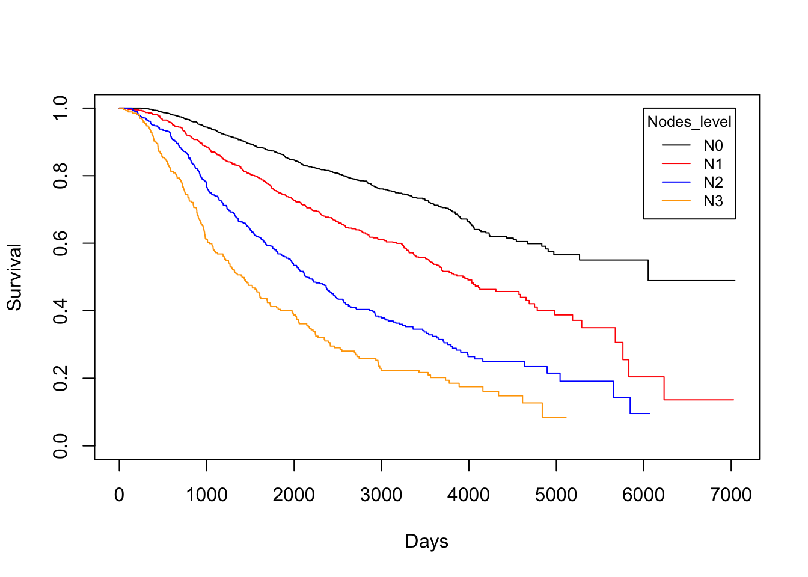
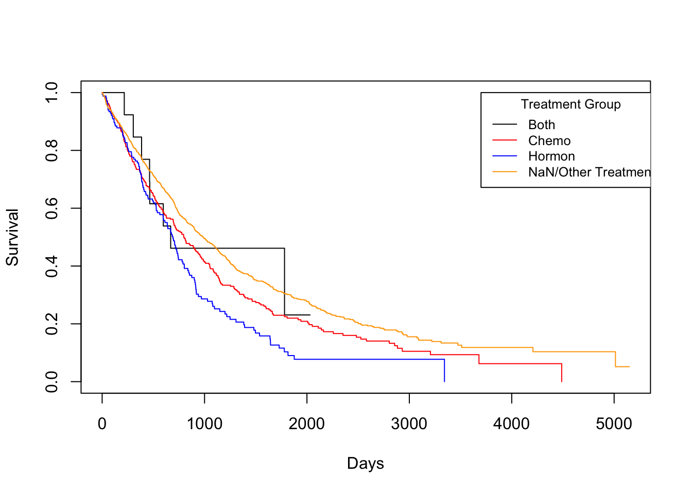
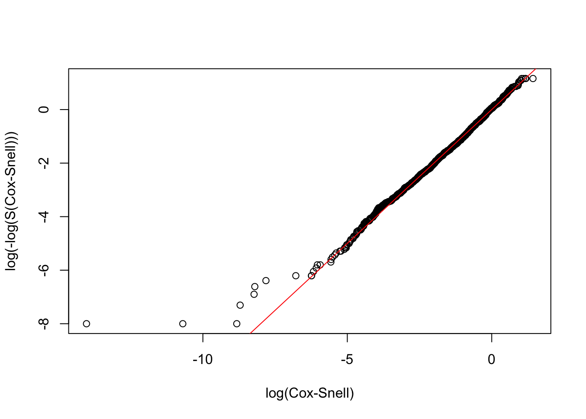
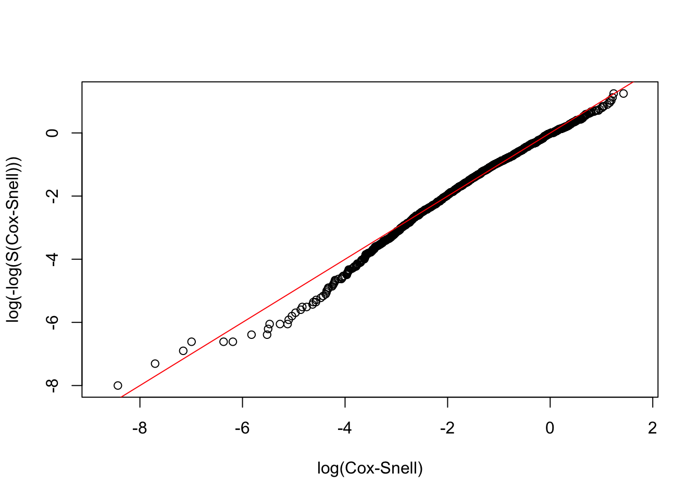

Chapter3 Survival
3.1 Loading Data
3.2 Kaplan-Miere estimator of the entire dataset
Death Time
KM <- survfit(Surv(dtime, death) ~ 1, data = rotterdam)
plot(KM, conf.int = TRUE, col = "blue", xlab="Days", ylab="Survival")
## [1] 2605.34## [1] 2638.5The overall mean survival time till death for breast cancer is 2605 days, which is approximately 7 years. The overall median survival time till death for breast cancer is 2638 days, which is also approximately 7 years.
Recurrence Time
KM <- survfit(Surv(rtime, recur) ~ 1, data = rotterdam)
plot(KM, conf.int = TRUE, col = "blue", xlab="Days", ylab="Survival")
## [1] 2097.903## [1] 1940The overall mean survival time till recurrence for breast cancer is 2097 days, which is approximately 6 years. The overall median survival time till recurrence for breast cancer is 1940 days, which is also approximately 5 years.
KM <- survfit(Surv(drecurtime, death) ~ 1, data = rotterdam_recur)
plot(KM, conf.int = TRUE, col = "blue", xlab="Days", ylab="Survival")
## [1] 978.5481## [1] 719.5The overall mean survival time after rucurrence till death for breast cancer is 834 days, which is approximately a little more than 2 years. The overall median survival time after rucurrence till death for breast cancer is 625 days, which is approximately less than 2 years.
Since a Kaplan-Miere estimator is unbiased, we could view the median as being very close to the true value of survival time.
3.3 Kaplan-Miere estimator on different variables in rotterdam
There are 16 variables in the rotterdam dataset. Of course we could have fit each variable with a KM estimator, but it would be meaningless to do them all. We will stick to the Diagnostics and Treatment we mentioned in Chapter 2 and fit size, Nodes_level(we are not using nodes because a Kaplan-Miere estimator does not work well with quantitative variables), and Treatment each with KM estimators with respect to dtime, rtime, and drecurtime to grasp the survival time within each categories of the variables.
3.3.1 size vs. Survival Times
size vs. dtime
KM_None_Death <- survfit(Surv(dtime, death) ~ size, data = rotterdam)
plot(KM_None_Death, conf.type = "plain", col = c("black","red","blue"), xlab="Days", ylab="Survival")
legend(6000, 1, legend=c("<=20", "20-50", ">50"),
col=c("black", "red", "blue"), lty=1, cex=0.8,
title="Tumor Size", text.font=6)
size vs. rtime
KM_None_Recur <- survfit(Surv(rtime, recur) ~ size, data = rotterdam)
plot(KM_None_Recur, conf.type = "plain", col = c("black","red","blue"), xlab="Days", ylab="Survival")
legend(6000, 1, legend=c("<=20", "20-50", ">50"),
col=c("black", "red", "blue"), lty=1, cex=0.8,
title="Tumor Size", text.font=6)In general, patients with smaller tumor at diagnosis enjoys longer survival for both death and recurrence.
KM_None_drecur <- survfit(Surv(drecurtime, death) ~ size, data = rotterdam_recur)
plot(KM_None_drecur, conf.type = "plain", col = c("black","red","blue"), xlab="Days", ylab="Survival")
legend(4500, 1, legend=c("<=20", "20-50", ">50"),
col=c("black", "red", "blue"), lty=1, cex=0.8,
title="Tumor Size", text.font=6)The trend is still the same as patients with smaller tumor size enjoy longer survival of death after recurrence, but the survival time now decreases much faster for all groups.
3.3.2 Nodes_level vs. Survival Times
Nodes_level vs. dtime
KM_None_Death <- survfit(Surv(dtime, death) ~ Nodes_level, data = rotterdam)
plot(KM_None_Death, conf.type = "plain", col = c("black","red","blue","orange"), xlab="Days", ylab="Survival")
legend(6000, 1, legend=c("N0", "N1","N2", "N3"),
col=c("black", "red", "blue", "orange"), lty=1, cex=0.8,
title="Nodes_level", text.font=6)
Nodes_level vs. rtime
KM_None_Recur <- survfit(Surv(rtime, recur) ~ Nodes_level, data = rotterdam)
plot(KM_None_Recur, conf.type = "plain", col = c("black","red","blue","orange"), xlab="Days", ylab="Survival")
legend(6000, 1, legend=c("N0", "N1","N2", "N3"),
col=c("black", "red", "blue", "orange"), lty=1, cex=0.8,
title="Nodes_level", text.font=6)
In general, patients with less nodes tested positive will enjoy longer survival for both death and recurrence.
Nodes_level vs. drecurtime
KM_None_drecur <- survfit(Surv(drecurtime, death) ~ Nodes_level, data = rotterdam_recur)
plot(KM_None_drecur, conf.type = "plain", col = c("black","red","blue","orange"), xlab="Days", ylab="Survival")
legend(4500, 1, legend=c("N0", "N1","N2", "N3"),
col=c("black", "red", "blue", "orange"), lty=1, cex=0.8,
title="Nodes_level", text.font=6)The trend is still the same as patients with fewer nodes tested positive enjoy longer survival of death after recurrence, but the survival time now decreases much faster for all groups, and the difference is small in groups N1, N2 and N3.
3.3.3 Treatment vs. Survival Times
Treatment vs. dtime
KM_Treatment_Death <- survfit(Surv(dtime, death) ~ Treatment, data = rotterdam)
plot(KM_Treatment_Death, conf.int = FALSE, col = c("black", "red", "blue", "orange"), xlab="Days", ylab="Survival")
legend(1, 0.4, legend=c("Both", "Chemo","Hormon", "NaN/Other Treatment"),
col=c("black", "red", "blue", "orange"), lty=1, cex=0.8,
title="Treatment Group", text.font=6)Treatment vs. rtime
KM_Treatment_Recur <- survfit(Surv(rtime, recur) ~ Treatment, data = rotterdam)
plot(KM_Treatment_Recur, conf.int = FALSE, col = c("black", "red", "blue", "orange"), xlab="Days", ylab="Survival")
legend(1, 0.4, legend=c("Both", "Chemo","Hormon", "NaN/Other Treatment"),
col=c("black", "red", "blue", "orange"), lty=1, cex=0.8,
title="Treatment Group", text.font=6)As we have discussed in Chapter 2, we know that generally chemotherapy is used on patients with age lower than 50 years old and hormontherapy is used on patients with age higher than 50 years old. Based on the difference of treatment, we could see that chemotherapy has a better effect than hormontherapy with respect to death time and a smaller yet still better effect regarding the recurrence time.
Treatment vs. drecurtime
KM_Treatment_drecur <- survfit(Surv(drecurtime, death) ~ Treatment, data = rotterdam_recur)
plot(KM_Treatment_drecur, conf.int = FALSE, col = c("black", "red", "blue", "orange"), xlab="Days", ylab="Survival")
legend(3700, 1, legend=c("Both", "Chemo","Hormon", "NaN/Other Treatment"),
col=c("black", "red", "blue", "orange"), lty=1, cex=0.8,
title="Treatment Group", text.font=6)
However, sadly enough, from the above plot we could see that no matter what treatment a patient use, it does not make a difference for the death survival time after cancer cells have recurred. This matches our conclusion from the visualization in Chapter 2.
3.4 Parametric Models
Another point that we are going to explore is if we would be able to fit our data to a parametric model. This matters since if we could fit any parametric model, then we should have a model good enough to generate predictions of breast cancer patients’ survival and would have nice and interpretable coefficients to work with.
To do so, we will begin by checking if any of Exponential, Weibull, or Log-normal distribution would be adequate parametric assumption to cast on our data. We will verify the adequacy by checking the Cox-Snell residual plot. We will be fitting models using variables: Treatment, size, nodes, age(We have shown in Chapter 2 that age is a confounder for categories in Treatment).
3.4.1 User-defined Cox-Snell function
# The Cox-Snell function takes as inputs
# 1. A vector of Cox-Snell residuals created by the user based on the model being evaluated,
# 2. A status vector
# 3. Optional x- and y- limits for the resulting plot
CoxSnell = function(cs,status,xlim=NULL,ylim=NULL)
{
kmcs = survfit(Surv(jitter(cs,amount=(max(cs)-min(cs))/1000),status) ~ 1)$surv
plot(log(-log(kmcs)) ~ sort(log(cs)) ,
xlab="log(Cox-Snell)", ylab="log(-log(S(Cox-Snell)))", xlim=xlim, ylim=ylim )
abline(0,1,col='red')
}3.4.2 Exponential models
We will begin by verifying the adequacy of Exponential model.
Dexp <- survreg(Surv(dtime, death) ~ Treatment + size + nodes + age, dist='exponential', data=rotterdam)
Dexp## Call:
## survreg(formula = Surv(dtime, death) ~ Treatment + size + nodes +
## age, data = rotterdam, dist = "exponential")
##
## Coefficients:
## (Intercept) TreatmentChemo
## 10.49678202 -0.51997169
## TreatmentHormon TreatmentNaN/Other Treatment
## -0.44961578 -0.46574886
## size20-50 size>50
## -0.46803053 -0.81548193
## nodes age
## -0.06997150 -0.01412165
##
## Scale fixed at 1
##
## Loglik(model)= -12137 Loglik(intercept only)= -12360.4
## Chisq= 446.94 on 7 degrees of freedom, p= <2e-16
## n= 2982
Dexp <- survreg(Surv(rtime, recur) ~ Treatment + size + nodes + age, dist='exponential', data=rotterdam)
Dexp## Call:
## survreg(formula = Surv(rtime, recur) ~ Treatment + size + nodes +
## age, data = rotterdam, dist = "exponential")
##
## Coefficients:
## (Intercept) TreatmentChemo
## 8.818707424 -0.372797596
## TreatmentHormon TreatmentNaN/Other Treatment
## -0.536512833 -0.490056002
## size20-50 size>50
## -0.404626936 -0.719554358
## nodes age
## -0.082728526 0.008130282
##
## Scale fixed at 1
##
## Loglik(model)= -13917.5 Loglik(intercept only)= -14153.7
## Chisq= 472.4 on 7 degrees of freedom, p= <2e-16
## n= 2982
The Exponential does not seem adequate in this case.
3.4.3 Weibull models
Next we will examine the adequacy of Weibull model.
Dweibull <- survreg(Surv(dtime, death) ~ Treatment + size + nodes + age, dist='weibull', data=rotterdam)
Dweibull## Call:
## survreg(formula = Surv(dtime, death) ~ Treatment + size + nodes +
## age, data = rotterdam, dist = "weibull")
##
## Coefficients:
## (Intercept) TreatmentChemo
## 9.93741760 -0.40097983
## TreatmentHormon TreatmentNaN/Other Treatment
## -0.40778590 -0.36210464
## size20-50 size>50
## -0.35546640 -0.65448317
## nodes age
## -0.05589248 -0.01125732
##
## Scale= 0.739963
##
## Loglik(model)= -12068.9 Loglik(intercept only)= -12322.7
## Chisq= 507.49 on 7 degrees of freedom, p= <2e-16
## n= 2982
Dweibull <- survreg(Surv(rtime, recur) ~ Treatment + size + nodes + age, dist='weibull', data=rotterdam)
Dweibull## Call:
## survreg(formula = Surv(rtime, recur) ~ Treatment + size + nodes +
## age, data = rotterdam, dist = "weibull")
##
## Coefficients:
## (Intercept) TreatmentChemo
## 8.830213089 -0.376480833
## TreatmentHormon TreatmentNaN/Other Treatment
## -0.539278367 -0.495766112
## size20-50 size>50
## -0.410910817 -0.727355688
## nodes age
## -0.083786844 0.008292188
##
## Scale= 1.018498
##
## Loglik(model)= -13917.1 Loglik(intercept only)= -14145.7
## Chisq= 457.19 on 7 degrees of freedom, p= <2e-16
## n= 2982
The Weibull model is still not adequate.
3.4.4 Log-normal models
Finally, we will examine the adequacy of Log-normal model.
Dlnorm <- survreg(Surv(dtime, death) ~ Treatment + size + nodes + age , dist='lognormal', data=rotterdam)
Dlnorm## Call:
## survreg(formula = Surv(dtime, death) ~ Treatment + size + nodes +
## age, data = rotterdam, dist = "lognormal")
##
## Coefficients:
## (Intercept) TreatmentChemo
## 9.709442268 -0.431016329
## TreatmentHormon TreatmentNaN/Other Treatment
## -0.346351742 -0.423626557
## size20-50 size>50
## -0.372703559 -0.654189313
## nodes age
## -0.079103425 -0.009903862
##
## Scale= 1.077329
##
## Loglik(model)= -12034.1 Loglik(intercept only)= -12286.5
## Chisq= 504.67 on 7 degrees of freedom, p= <2e-16
## n= 2982CS_LnormD <- -log(1 - plnorm(rotterdam$dtime, 9.709442268-0.431016329*(rotterdam$Treatment=="Chemo")
-0.346351742*(rotterdam$Treatment=="Hormon")
-0.423626557*(rotterdam$Treatment=="NaN/Other Treatment")
-0.372703559*(rotterdam$size=="20-50")
-0.654189313*(rotterdam$size==">50")
-0.079103425*rotterdam$nodes
-0.009903862*rotterdam$age,
1.077329))
# Make appropriate graph using CoxSnell function
CoxSnell(CS_LnormD, rotterdam$death)
Rlnorm <- survreg(Surv(rtime, recur) ~ Treatment + size + nodes + age, dist='lognormal', data=rotterdam)
Rlnorm## Call:
## survreg(formula = Surv(rtime, recur) ~ Treatment + size + nodes +
## age, data = rotterdam, dist = "lognormal")
##
## Coefficients:
## (Intercept) TreatmentChemo
## 8.514204484 -0.382172447
## TreatmentHormon TreatmentNaN/Other Treatment
## -0.479063703 -0.605193863
## size20-50 size>50
## -0.458345796 -0.738657689
## nodes age
## -0.107708963 0.009059467
##
## Scale= 1.340545
##
## Loglik(model)= -13803.8 Loglik(intercept only)= -14045.8
## Chisq= 483.94 on 7 degrees of freedom, p= <2e-16
## n= 2982CS_LnormR <- -log(1 - plnorm(rotterdam$rtime, 8.514204484-0.382172447*(rotterdam$Treatment=="Chemo")
-0.479063703*(rotterdam$Treatment=="Hormon")
-0.605193863*(rotterdam$Treatment=="NaN/Other Treatment")
-0.458345796*(rotterdam$size=="20-50")
-0.738657689*(rotterdam$size==">50")
-0.107708963*rotterdam$nodes
+0.009059467*rotterdam$age,
1.340545))
# Make appropriate graph using CoxSnell function
CoxSnell(CS_LnormR, rotterdam$recur)
We could see that the Log-normal parametric model is an adequate model for both the dtime and rtime vs. Treatment + size + nodes + age.
3.5 Cox-PH model:
m_death_withage = coxph(Surv(dtime, death) ~ Treatment + size + nodes + age, data=rotterdam)
m_death_withage## Call:
## coxph(formula = Surv(dtime, death) ~ Treatment + size + nodes +
## age, data = rotterdam)
##
## coef exp(coef) se(coef) z p
## TreatmentChemo 0.546830 1.727768 0.360076 1.519 0.129
## TreatmentHormon 0.519838 1.681756 0.366212 1.420 0.156
## TreatmentNaN/Other Treatment 0.496324 1.642672 0.356927 1.391 0.164
## size20-50 0.477235 1.611612 0.065146 7.326 2.38e-13
## size>50 0.865167 2.375402 0.090893 9.519 < 2e-16
## nodes 0.074146 1.076964 0.004864 15.244 < 2e-16
## age 0.014904 1.015016 0.002562 5.818 5.94e-09
##
## Likelihood ratio test=487.1 on 7 df, p=< 2.2e-16
## n= 2982, number of events= 1272## chisq df p
## Treatment 4.45 3 0.21657
## size 4.81 2 0.09023
## nodes 3.32 1 0.06850
## age 15.12 1 0.00010
## GLOBAL 25.38 7 0.00065m_death_strataage = coxph(Surv(dtime, death) ~ Treatment + size + nodes + strata(age), data=rotterdam)
m_death_strataage## Call:
## coxph(formula = Surv(dtime, death) ~ Treatment + size + nodes +
## strata(age), data = rotterdam)
##
## coef exp(coef) se(coef) z p
## TreatmentChemo 0.566734 1.762501 0.368984 1.536 0.125
## TreatmentHormon 0.571493 1.770909 0.375700 1.521 0.128
## TreatmentNaN/Other Treatment 0.497674 1.644890 0.365574 1.361 0.173
## size20-50 0.464177 1.590704 0.066890 6.939 3.94e-12
## size>50 0.772204 2.164532 0.097352 7.932 2.16e-15
## nodes 0.078158 1.081294 0.005365 14.567 < 2e-16
##
## Likelihood ratio test=391.7 on 6 df, p=< 2.2e-16
## n= 2982, number of events= 1272## chisq df p
## Treatment 3.60 3 0.31
## size 4.32 2 0.12
## nodes 1.37 1 0.24
## GLOBAL 9.64 6 0.14## Call:
## coxph(formula = Surv(rtime, recur) ~ Treatment + size + nodes +
## age, data = rotterdam)
##
## coef exp(coef) se(coef) z p
## TreatmentChemo 0.324447 1.383266 0.283541 1.144 0.252512
## TreatmentHormon 0.436864 1.547846 0.290953 1.501 0.133227
## TreatmentNaN/Other Treatment 0.459422 1.583159 0.280366 1.639 0.101286
## size20-50 0.399867 1.491626 0.057857 6.911 4.80e-12
## size>50 0.684610 1.982999 0.087589 7.816 5.44e-15
## nodes 0.080239 1.083546 0.004575 17.539 < 2e-16
## age -0.008653 0.991385 0.002314 -3.739 0.000184
##
## Likelihood ratio test=429.7 on 7 df, p=< 2.2e-16
## n= 2982, number of events= 1518## chisq df p
## Treatment 7.943 3 0.047
## size 26.427 2 1.8e-06
## nodes 5.297 1 0.021
## age 0.104 1 0.747
## GLOBAL 42.374 7 4.4e-07m_recur = coxph(Surv(rtime, recur) ~ Treatment + size + nodes + strata(age), data=rotterdam)
m_recur## Call:
## coxph(formula = Surv(rtime, recur) ~ Treatment + size + nodes +
## strata(age), data = rotterdam)
##
## coef exp(coef) se(coef) z p
## TreatmentChemo 0.248511 1.282115 0.287150 0.865 0.387
## TreatmentHormon 0.294341 1.342241 0.295465 0.996 0.319
## TreatmentNaN/Other Treatment 0.352181 1.422166 0.284206 1.239 0.215
## size20-50 0.400691 1.492855 0.058893 6.804 1.02e-11
## size>50 0.684020 1.981830 0.091781 7.453 9.14e-14
## nodes 0.082436 1.085930 0.005002 16.482 < 2e-16
##
## Likelihood ratio test=411.3 on 6 df, p=< 2.2e-16
## n= 2982, number of events= 1518## chisq df p
## Treatment 7.29 3 0.063
## size 21.99 2 1.7e-05
## nodes 6.32 1 0.012
## GLOBAL 37.04 6 1.7e-06